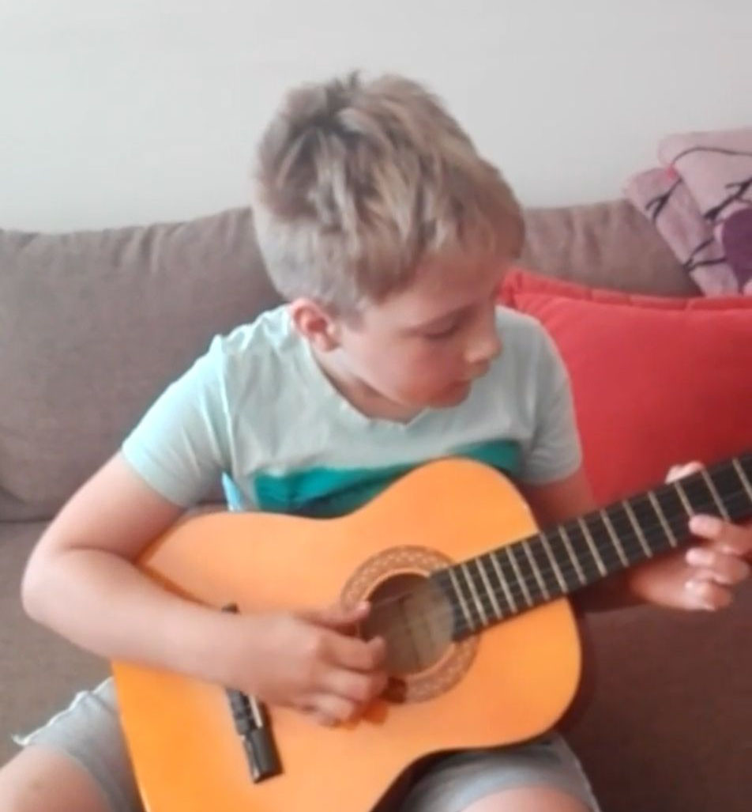
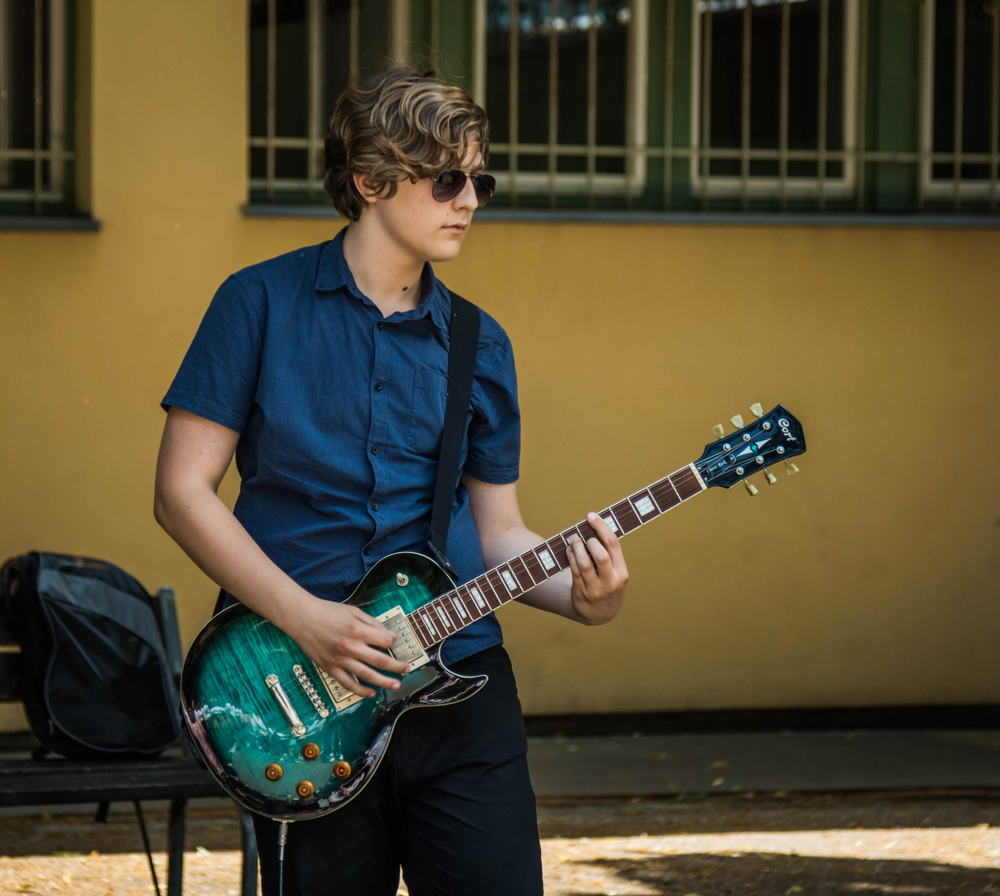

még a deszki iskolában kezdem el furulyázni, mert nem értem még át a gitárt. Itt tanultam meg a hangokat, és kicsi tapasztalatom is lett hangszerek terén. Aztán amikor átmentem Szőregre, megtudtam hogy van gitár óra, jelentkeztem. Igaz, klasszikus gitár volt, de nekem az is tökéletes volt. Ott megtanultam az alapokat, pár akkordot, meg egy-két dalt. Egy baj volt, ezek a dalok többnyire klasszikus vagy népdalok voltak. Amikor feldobtam a tanárnőnek hogy szeretnék Guns N Rosest tanulni, gondolkodás nélkül kijelentette hogy az lehetetlen.
Ötödik osztályban vettem magamnak egy Squier Stratocaster elektromos gitárt és anyukám talált nekem egy tanárt aki taníthatna. Ő tőle is megkérdeztem hogy tanítana-e Guns N Rosest és ő mondta hogy persze, miért ne?
Lassan egy éve hogy vettem egy komolyabb gitárt, egy Cort CR250-est. Imdádom! Sokkal profibbnak érződik mint a Squier. Adódott Júniusban egy lehetőségem hogy az iskolában az évzárón játszak el egy dalt egy másik tanulóval. Ez volt az első olyan alkalom hogy valakivel játszottam.
Sikerült összehozzak pár hete egy zenekart. Próbáltunk volna, csak mindig valami közbejött. De azért remélem sikerül a közeljövőbe összejönni! Itt vannak a tagok:
| Gitár | Böröcz Roland |
| Basszusgitár | Monoczki Máté |
| Dob | Jójárt Kolos |
Ugyanitt énekest keresünk